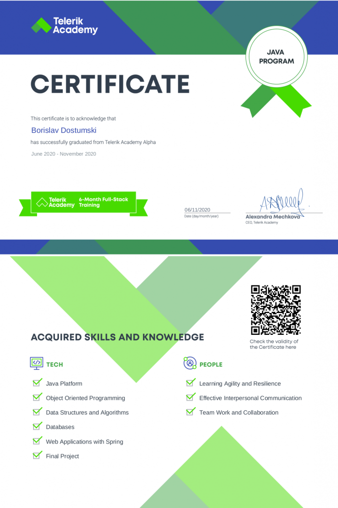

Telerik - Alpha Java Track
Telerik - Alpha Java Track
- Issuer: Telerik - Petar Raykov, Todor Andonov, Petya Grozdarska
- Duration: 440+ hours
- Obtained: 2020-11-06
During 440+ hours of intensive training, I gain access to key practical knowledge and insights needed to become the next Java developer — advanced Java, object-oriented programming, data structures and algorithms, high-quality code, unit testing, databases, front-end fundamentals, Spring MVC.
20% of the program was dedicated to polishing my soft skills. I develop the ability to manage feedback and expectations, ask the right questions, prioritize, and stick to high-value activities.
Tech Skills
- Java Platform
- Object Oriented Programming
- Data Structures and Algorithms
- Databases
- Web Applications with Spring
- Final Project
People Skills
- Learning Agility and Resilience
- Effective Interpersonal Communication
- Team Work and Collaboration
